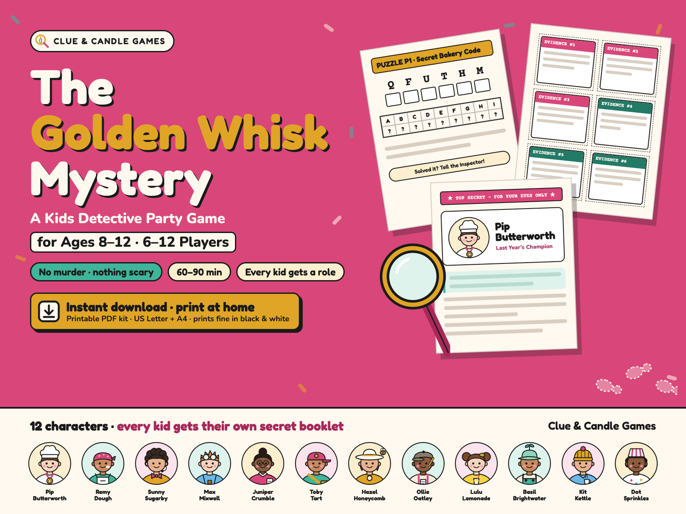
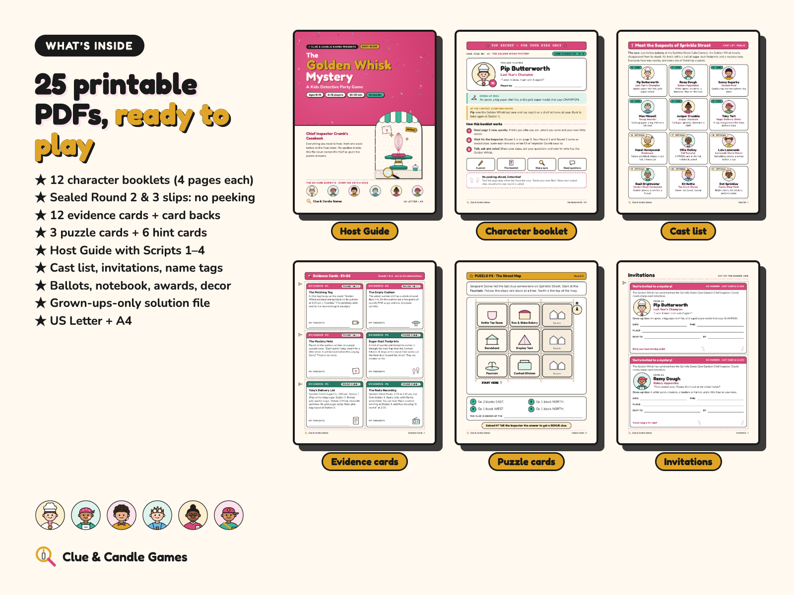
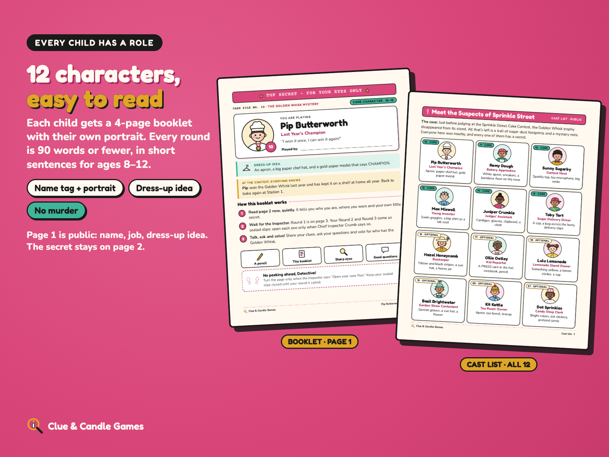
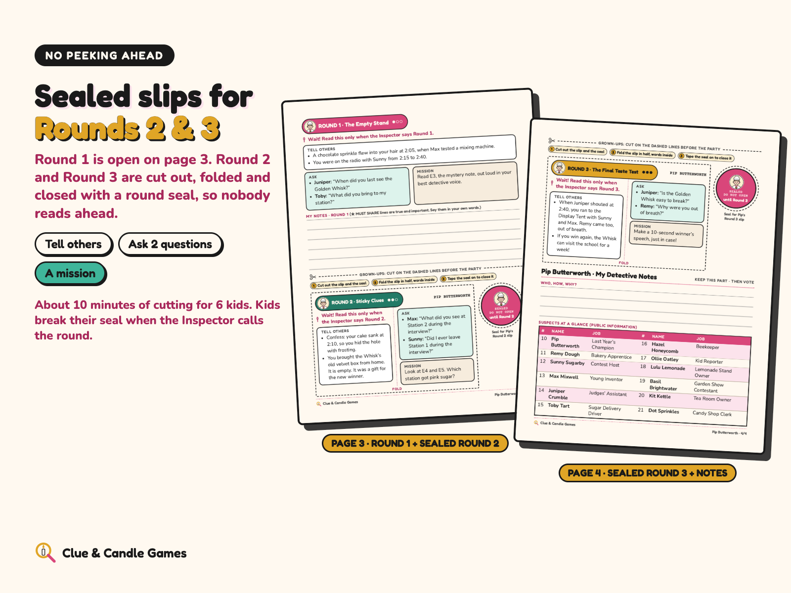
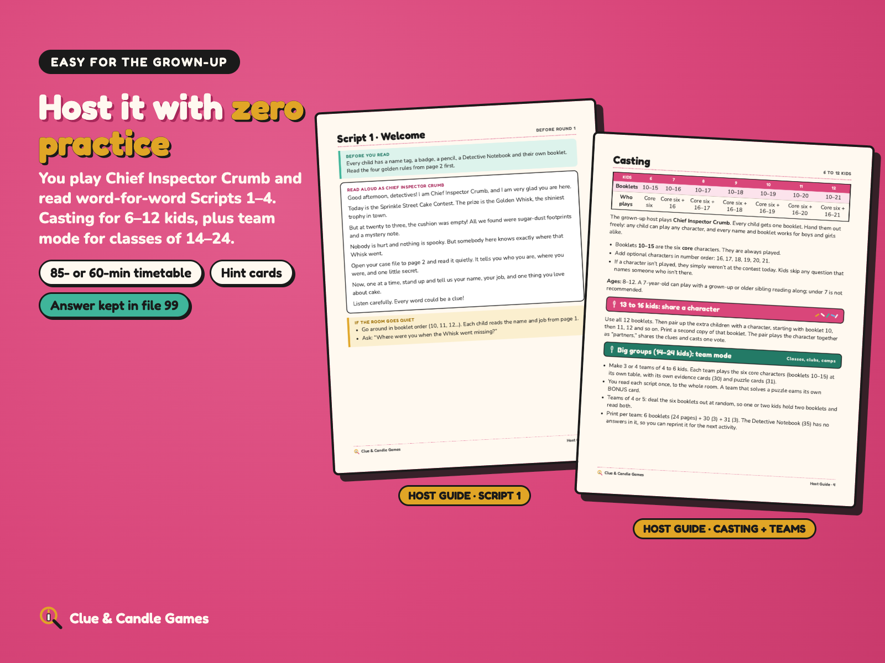
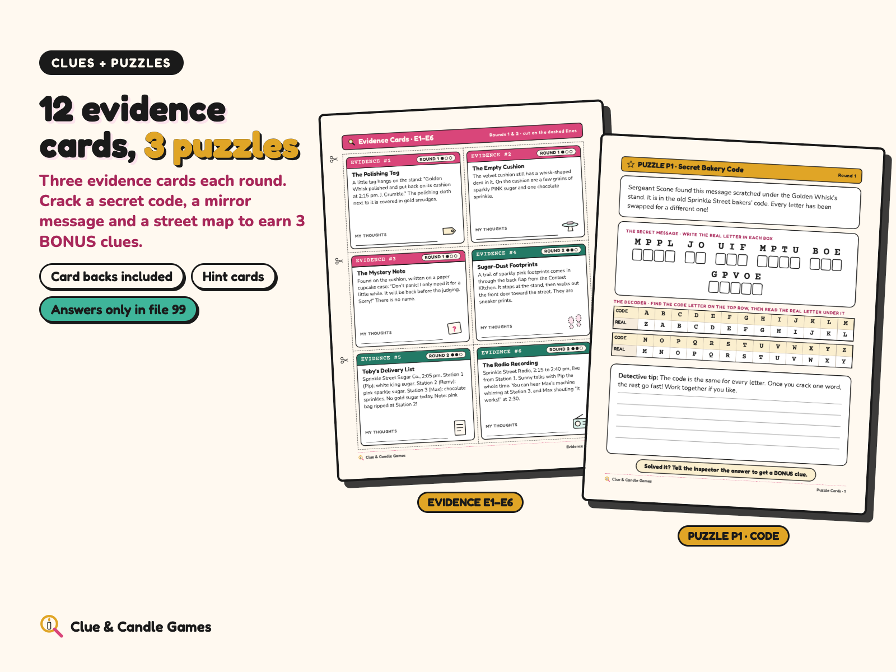

A no-murder whodunit for ages 8–12 · 6–12 players · 60–90 minutes · Printable PDF. Every child has a role, there's no murder, and every round is 90 words or fewer: a complete kids mystery party game for a detective birthday party, sleepover or classroom. From Clue & Candle Games, the party-games imprint of Hustle Studio.

$15.00 USD, one-time download, for the whole party
Buy now: $15🔒 Secure checkout: payment is handled by Waffo Pancake, our merchant of record. We never see your card details.
↩️ 14-day no-questions refund. Email chenphien@gmail.com within 14 days of purchase and we'll refund you in full through Waffo to your original payment method. No reason needed (see Terms).
⭐ Satisfaction guarantee: if your party doesn't work, we'll make it right or refund you.
📥 Broken download? Your download page lets you get every file again at any time. If a link fails, email us and we reply within 2 business days, with the files or a refund.
🔒 Secure checkout. Waffo Pancake is the merchant of record: it processes the payment, handles any sales tax or VAT that applies and emails you a receipt.
📥 Instant digital download. Nothing is shipped, and there's no subscription.
A 49-second silent scroll through real pages: Host Guide, cast list, a booklet with its sealed slips, evidence cards, a puzzle card and the casting and team-mode page. No spoiler pages.
Every picture below shows real pages from the PDFs. None of them gives away who took the Whisk.





It's the afternoon of the Sprinkle Street Cake Contest. The prize is the Golden Whisk, the shiniest trophy in town. But twenty minutes before judging, the cushion is empty. All that's left is a trail of sugar-dust footprints and a mystery note. Chief Inspector Crumb (that's the grown-up host) closes the street, and the young detectives get to work.
In every round, kids share clues, ask two named characters a question and try a small mission. The Inspector hands out three evidence cards per round, plus one puzzle card. Solve the secret code, the mirror message or the street map, whisper the answer to the Inspector, and earn a BONUS clue.
After Round 3, everyone fills in a ballot: who took the Golden Whisk, how, why, and the best clue. The Inspector reads the ending from the grown-ups-only solution file, scores the ballots and hands out four awards. The mystery is fair: every step of the answer can be worked out from the evidence cards and the six core booklets.
There is no murder in this mystery. Nobody is hurt, nothing is spooky, and nobody gets punished. All 12 characters work for boys and girls alike, and the booklets use names instead of he or she.
Every booklet is 4 pages: page 1 is public (portrait, name, job and a dress-up idea); page 2 holds a little secret and where they were (150 words or fewer, read quietly at the start); page 3 holds Round 1 plus the cut-out sealed Round 2 slip; page 4 holds the sealed Round 3 slip plus My Detective Notes and the suspects at a glance. Each round is 90 words or fewer: things to tell others, two questions for named characters and a mission. A grown-up cuts and seals the slips before the party, about 10 minutes for 6 kids.
One ZIP with two folders, US-Letter and A4, each holding the same 25 PDFs. After purchase every file can also be downloaded on its own from your download page. You only print what your group needs: the print list in file 00 tells you exactly how many pages.
| # | File (in both US-Letter/ and A4/) | Pages |
|---|---|---|
| 00 | Start Here: file guide, print list for 6–12 kids, parent FAQ | 4 |
| 01 | Host Guide: checklist, casting table, sharing for 13–16 kids, team mode for 14–24, full and quick timetables, Scripts 1–4, puzzle and hint how-to, hosting tips, 3 snack ideas, printing tips. No spoilers. | 12 |
| 02 | Invitations: 12 character invitations with portraits, a general invitation, a text version for parents | 8 |
| 03 | Cast List: all 12 characters with portraits, dress-up ideas and a short public bio | 2 |
| 10–21 | 12 character booklets, one PDF per character, with sealed Round 2 and Round 3 slips | 4 each |
| 22 | All Booklets Combined (the same 12 booklets in one file) | 48 |
| 30 | Evidence Cards: 12 cards (E1–E9 + BONUS E10–E12) and card backs | 3 |
| 31 | Puzzle Cards: P1 code, P2 mirror message, P3 map | 3 |
| 32 | Hint Cards: 6 hint cards | 1 |
| 33 | Name Tags and Badges: 12 name tags with portraits, 12 Junior Detective badges | 2 |
| 34 | Accusation Ballots: 4 per page | 1 |
| 35 | Detective Notebook | 2 |
| 36 | Awards and Decor: 4 award certificates, a paper Golden Whisk trophy, 2 table signs | 4 |
| 99 | Solution, Grown-Ups Only: the answer, clue chain, puzzle answers, Script 5 and scoring | 5 |
ZIP folder structure
The-Golden-Whisk-Mystery_ClueAndCandleGames.zip ├── US-Letter/ (25 PDFs) │ ├── 00-START-HERE.pdf │ ├── 01-Host-Guide.pdf │ ├── 02-Invitations.pdf │ ├── 03-Cast-List.pdf │ ├── 10-Booklet-Pip-Butterworth.pdf ┐ │ ├── 11-Booklet-Remy-Dough.pdf │ │ ├── 12-Booklet-Sunny-Sugarby.pdf │ 6 core characters │ ├── 13-Booklet-Max-Mixwell.pdf │ │ ├── 14-Booklet-Juniper-Crumble.pdf │ │ ├── 15-Booklet-Toby-Tart.pdf ┘ │ ├── 16-Booklet-Hazel-Honeycomb.pdf ┐ │ ├── 17-Booklet-Ollie-Oatley.pdf │ │ ├── 18-Booklet-Lulu-Lemonade.pdf │ 6 optional characters │ ├── 19-Booklet-Basil-Brightwater.pdf │ │ ├── 20-Booklet-Kit-Kettle.pdf │ │ ├── 21-Booklet-Dot-Sprinkles.pdf ┘ │ ├── 22-All-Booklets-Combined.pdf │ ├── 30-Evidence-Cards.pdf │ ├── 31-Puzzle-Cards.pdf │ ├── 32-Hint-Cards.pdf │ ├── 33-Name-Tags-and-Badges.pdf │ ├── 34-Accusation-Ballots.pdf │ ├── 35-Detective-Notebook.pdf │ ├── 36-Awards-and-Decor.pdf │ └── 99-SOLUTION-Grown-Ups-Only.pdf └── A4/ (the same 25 PDFs in A4 size)
| Kids | Booklets |
|---|---|
| 6 | 10–15 (the six core characters) |
| 7 | 10–16 |
| 8 | 10–17 |
| 9 | 10–18 |
| 10 | 10–19 |
| 11 | 10–20 |
| 12 | 10–21 |
| 13–16 | all 12, with two kids sharing a character (not 16 separate roles) |
| 14–24 (team mode) | 3–4 teams of 4–6, each team plays booklets 10–15 with its own evidence and puzzle cards |
The Case of the Cold Cocoa is our free 10-page mini mystery for 4–6 players. It's written for grown-ups and teens (not this kids' kit), so it's a taste of how our games work: suspects, host scripts, evidence cards, ballots and a fair solution. No email or signup needed.
Download the free mini mystery (PDF)What The Golden Whisk Mystery adds over the free one: written for ages 8–12, 12 character booklets with portraits and sealed rounds, 3 puzzle cards and 6 hint cards, a 12-page Host Guide with team mode for 14–24, invitations, name tags, badges, awards and a paper trophy, all in US Letter and A4.
Is it scary?
No. A trophy goes missing, the kids find out who took it, there's a big "sorry" and the party carries on. No murder, nobody hurt, nothing spooky.
How much reading?
Each round in a booklet is 90 words or fewer. Page 2 (150 words or fewer) is read quietly at the start.
Can younger siblings join?
Ages 8–12. A 7-year-old can play with a grown-up or older sibling reading along; under 7 is not recommended. Two children can share one character and one booklet.
Does an adult need to host?
Yes, one grown-up plays Chief Inspector Crumb, reads the scripts and hands out cards. No acting needed; before the party you print, cut the cards and seal the Round 2 and Round 3 slips.
How long does it take?
The Host Guide has a full game timetable (85 minutes) and a quick game timetable (60 minutes): three rounds of about 15 minutes each, plus welcome, ballots, reveal and awards.
Black-and-white printing?
Yes. Text is near-black on light pages, rounds are marked with words and dots as well as color, and all lines and the map print clearly in grayscale.
Are there reviews or party photos?
Not yet. Clue & Candle Games is a new brand, so there are no reviews or customer photos yet, and we won't invent any. That's why this page shows real pages and a flip-through video, offers a free mini mystery, and backs every purchase with a 14-day no-questions refund.
How do checkout and refunds work?
Checkout is run by Waffo Pancake, the merchant of record: it takes the payment, handles applicable sales tax/VAT and emails your receipt. For a refund, email chenphien@gmail.com within 14 days with your order email; the refund goes back to your original payment method. We reply within 2 business days.
How was it made?
The Golden Whisk Mystery is an original story, written with AI assistance, then edited and checked clue by clue for fair play. All names, places and events are fictional.
$15.00 USD, one-time
Buy now: $15🔒 Secure checkout by Waffo Pancake (merchant of record). Instant download. 14-day no-questions refund: if your party doesn't work, we'll make it right or refund you. Digital download only; nothing is shipped.